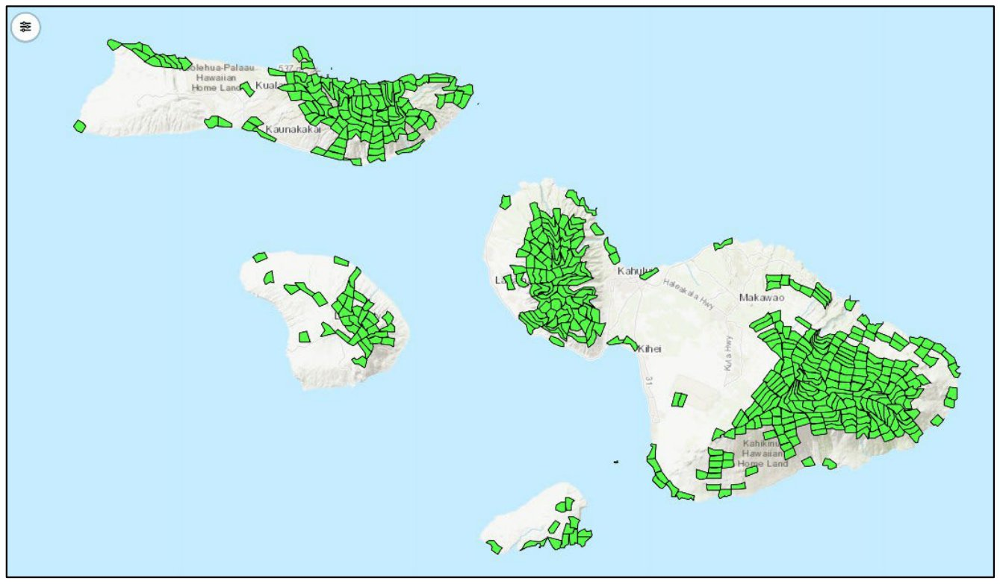

The species
The Hawaiian hoary bat occurs on Maui, Molokaʻi and Lānaʻi, and it has been observed on Kahoʻolawe.plan p.77, lines 3122-3123 (citing USFWS 2021) It is not known whether these are three (or four) separate populations or a single connected population (metapopulation).plan p.77, lines 3123-3125
Bats usually roost in trees and forage across many habitats, from native and non-native forests to wetlands and riparian areas.plan p.77, lines 3130-3132 They have been found roosting in ʻōhiʻa, pūhala, coconut palms, kukui, kiawe, avocado, shower trees, pūkiawe, fern clumps, eucalyptus, Cook pine and Norfolk Island pine stands. They feed mainly on night-flying beetles and moths.plan pp.77-78, lines 3132-3139
Unlike the seven other groups, the bat did not have its own taxonomic team.plan p.11, lines 704-707; glossary p.122-123 lines 4885-4889 The plan's Core Team and Implementation Team set its at-risk status, recovery goals, recovery footprint and action sequence.plan p.77, lines 3116-3118
At-risk terrestrial mammals of Maui Nui (plan Table 23). E = endangered. <!-- src: plan p.78, Table 23, lines 3142-3152 -->
| Species | Current populations | ESA listing | Facing imminent extinction | Interim recovery | Full recovery | Area surveys | Species surveys |
|---|---|---|---|---|---|---|---|
| Hawaiian hoary bat | 3 | E | X | ||||
| Total (1) | 1 | 0 | 1 | 0 | 0 | 0 |
Status and trends
There is no reliable population estimate for bats in Maui Nui.plan p.77, lines 3097-3098 The size and trend of Maui Nui bat populations are unknown. There is some sign that bats on Hawaiʻi Island may be stable or slightly increasing.plan p.77, lines 3125-3127 (citing Gorresen et al. 2013)
Experts were optimistic about bat conservation. But because bat population trends cannot yet be measured, it is not yet possible to confirm that conservation actions are helping bat populations.plan p.86, lines 3439-3444
Threats
- Collisions with wind turbines.plan p.77, lines 3098-3099; Exec Summary Table 1 p.vi
- Habitat loss.plan p.77, line 3099
- Possibly pesticide exposure, and possibly predation by invasive vertebrates such as cats and rats. Predation on bats has been shown on the mainland but not documented in Hawaiʻi.plan p.77 lines 3099-3100; p.80 lines 3211-3213
Recovery strategy
The plan's strategy for the bat involves:plan p.77, lines 3103-3116 - Preventing incidental take (accidental killing or harm) of bats from human activities, especially wind energy turbines. - Protecting forested areas and wetlands in the plan's recovery footprints for Forest birds, Seabirds, Waterbirds, Plants, Aquatic invertebrates and Terrestrial arthropods. - Reducing populations of invasive vertebrate predators, especially feral cats and rats, across Maui Nui. - Developing methods to measure population trends. - Identifying actions that can increase the number of young bats raised (productivity). - Finding out whether open flight lanes in forests matter for bats.
Goals
Setting numeric recovery goals for the bat is hard. The interim recovery goal is to keep the bat at or above its current population level, and to expand forest habitat, especially native forest, across Maui Nui.plan p.78, lines 3158-3161
Emergency actions
None are needed. The bat is not at imminent risk of extinction in the next five years.plan p.78, lines 3155-3156
Recovery footprint
The bat is a plan-only group: it was not part of the spatial prioritization, and it has no footprint of its own. Instead, the plan provides forest and wetland habitat for the bat through the native habitats in the recovery footprints for Forest birds, Seabirds, Waterbirds, Plants, Aquatic invertebrates and Terrestrial arthropods.plan p.78, lines 3164-3167 There are no priority footprints for the bat.plan p.79, lines 3173-3175 The plan does not give a planning-unit count for the combined bat footprint.plan Ch 6 h (no figure given); see notes/groups2.md

Priority conservation actions
The plan's action prioritization (a modified Priority Threat Management, or PTM, analysis, led by UH Mānoa) estimated how each action might affect the bat's chance of persisting on Maui Nui.plan p.79, lines 3178-3180; Exec Summary p.v line 151 Strategy 27, the most bird-focused combination, appears to give the bat the highest chance of persistence: 63 percent if fully implemented.plan p.79, lines 3184-3187 The bat is one of three groups (with Seabirds and Waterbirds) that can reach the plan's 50 percent persistence goal without relying on research or unproven new methods.plan p.86, lines 3436-3439; Exec Summary p.vii lines 271-273
1. Minimize harm from infrastructure (S16)
The most beneficial single strategy is S16, minimizing and modifying infrastructure, which targets bat deaths at wind energy farms.plan p.79, lines 3188-3190 The plan calls it the most strategic action for two reasons:plan pp.79-80, lines 3190-3202 - There are no accurate population estimates or trends for a population viability analysis (PVA), which would show how many bat deaths each year a population can withstand. - No documented conservation measures offset wind turbine deaths by reducing other causes of bat mortality or by increasing reproduction.
Because bat numbers and trends are unknown, avoiding bat deaths at wind turbines is the most strategic action available.plan pp.79-80, lines 3188-3202
2. Lay the foundation with habitat management (S6 and S5)
Stream and wetland habitat management (S6) and terrestrial habitat management (S5) have not been shown to increase bat populations. They do lay the groundwork for ecosystem restoration that may create more roosting and foraging opportunities.plan p.80, lines 3204-3209
Also: predator control (S7 and S11)
Invasive cats and rats may be an important threat to bats. Limited predator control would happen under S7 (invasive vertebrate pest control) in the Seabird and Forest bird footprints. S11 (landscape-scale rat suppression) would likely have more impact because it covers large landscapes.plan p.80, lines 3211-3216
Suggested sequencing of Strategy 27 actions to benefit Hawaiian hoary bats (plan Table 24). The plan's caption says that if all actions are implemented, bats are expected to have a 63 percent chance of persisting for 20 years. <!-- src: plan p.80, Table 24, lines 3217-3238 -->
| Strategy | Description | Persistence (%) | Sequence |
|---|---|---|---|
| S16 | Minimization and modification of infrastructure (minimize lighting, modify powerlines and wind turbines, reduce road kill of birds) | 49.2 | 1 |
| S11 | Landscape-scale rat suppression | 48.4 | |
| S6 | Wetland habitat management (for at-risk species) | 48.3 | 2 |
| S7 | Invasive vertebrate predator control (rats, cats, dogs, mongoose, barn owl, cattle egrets, rabbits) | 46.6 | |
| S10 | New predator fencing (snails, rodents, mongoose, cats) | 44.7 | |
| S5 | Terrestrial habitat management (for at-risk species) | 41.9 | 3 |
| S9 | Existing predator fencing (snails, rodents, mongoose, cats) | 41.9 | |
| S3 | Future ungulate fencing | 41.2 | |
| S2 | Existing ungulate fencing | 40.9 |
Persistence figures elsewhere in the planDetails
- The plan's combined strategy table (Table 26) and Appendix 2 give feasibility-adjusted bat values that differ slightly from Table 24: 58 percent under S27 and 53 percent under S25, with 40 percent under current actions and 37 percent with no action. Single strategies there give S16 47 percent, S7 and S11 46 percent, and S6 44 percent.plan p.85 Table 26; App 2 Table 1 p.A2-15 line 5685
- In Table 27, the bat's top three single actions are S16 (first), S7 (second) and S11 (third).plan p.87 Table 27, line 3521
- Appendix 2 notes that all but three strategies are predicted to raise the bat's persistence above 40 percent, and that the greatest gain comes from S27.plan App 2 p.A2-10, lines 5590-5591
- What S16 includes. As listed in Appendix 2, S16 includes reducing artificial lighting (with public outreach on how lighting affects bird and bat species), powerline diverters, and working with wind energy companies to modify wind turbines in areas designated by the Habitat Conservation Plan. The turbine task there is worded in terms of avian collisions.plan App 2 p.A2-35, lines 6442-6458
Monitoring and research needs
Research and monitoring are central to the bat strategy, because so little is known about bat numbers on Maui Nui.plan p.77 lines 3097-3098; p.86 lines 3439-3444 - Develop methods to measure bat population trends.plan p.77, line 3112 - Get population estimates good enough for a population viability analysis.plan p.79, lines 3193-3196 - Identify actions that can increase productivity in bat populations.plan p.77, line 3113 - Find out whether the presence or absence of flight lanes in forests matters for bats.plan p.77, lines 3114-3115 - Learn whether Maui Nui bats form three or four separate populations or one metapopulation.plan p.77, lines 3123-3125 - Document whether predation by invasive cats and rats affects bats in Hawaiʻi.plan p.80, lines 3211-3213